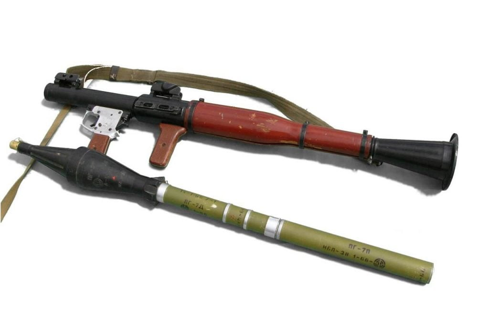
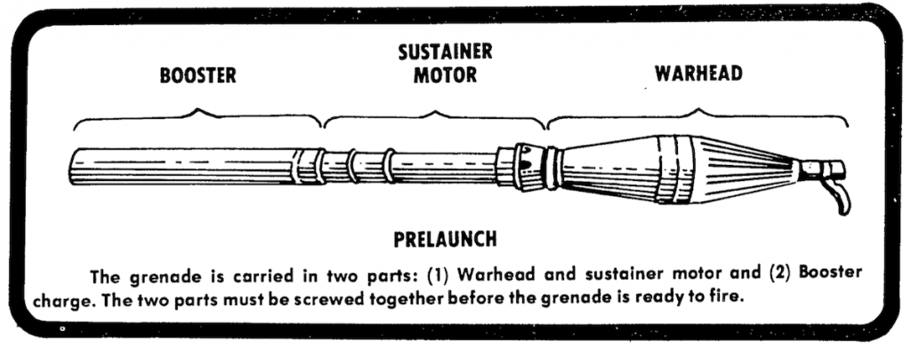
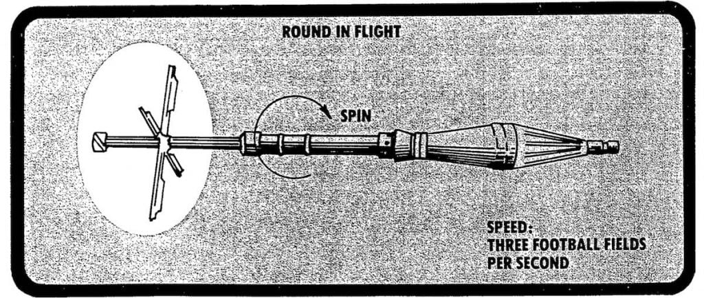
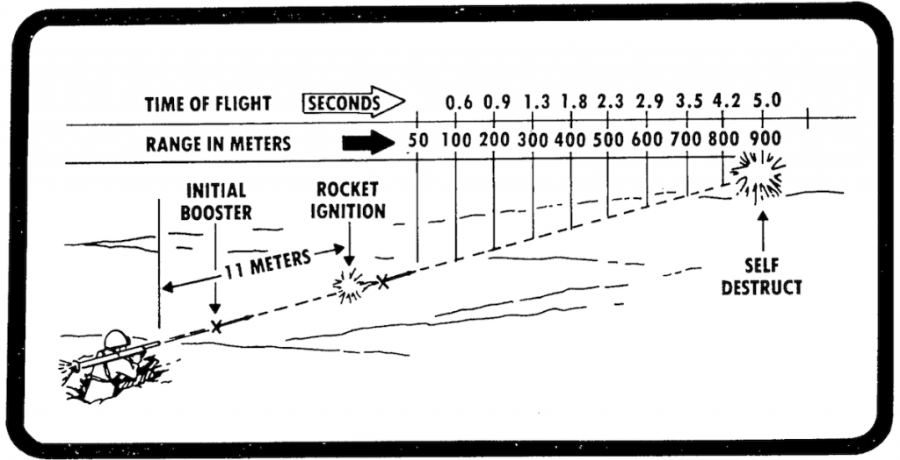

နောက်က ဒုံးကန်အားနဲ့ ပြေးတဲ့ ပုခုံးထမ်း ဒုံးကျည် မှန်သမျှကို RPG လို့ ခေါ်ပါတယ်။ ဒါပေမယ့် လူ အတော် များများ ကတော့ RPG လို့ ပြောလိုက်ရင် မျက်စေ့ထဲမှာ ကမ္ဘာပေါ်မှာ လူအသုံး အများဆုံး RPG-7 ကိုပဲ ပြေးပြီး မြင်ယောင် ကြပါတယ်။ ဒီဆောင်းပါးမှာ RPG အလုပ်လုပ်ပုံကို ဆွေးနွေးတဲ့ အခါ လူသိများတဲ့ RPG-7 ကို နမူနာ ထားပြီး တင်ပြပေးမှာ ဖြစ်ပါတယ်။
RPG-7 ဟာ ကမ္ဘာပေါ်မှာ လူသုံး အများဆုံး ပုခုံးထမ်း ပဲ့ထိန်းမဲ့ ဒုံးကျည် ဖြစ်ပါတယ်။ မူရင်း ဆိုဗီယက် ပြည်ထောင်စု (ယခု ရုရှား နိုင်ငံ) က ထုတ်လုပ်တာပါ။ ရိုးရှင်းမှု၊ အကြမ်းခံမှု၊ စိတ်ချရ မှုတွေကြောင့် ကမ္ဘာမှာ အထူး ကျော်ကြား လူကိုက် များပါတယ်။

မူလ ပထမ RPG-1 ဟာ ဂျာမန် တပ်မတော်မှာ သုံးခဲ့တဲ့ Panzerfaust ပန်ဇာဖော့စ် တင့်ဖျက်ဒုံးကျည်ကို အခြေပြုပြီး တီထွင်ခဲ့တာ ဖြစ်ပါတယ်။ သူ့နောက် RPG-2, RPG-3 အစရှိသဖြင့် ဆက်လက် ပြုပြင် မွမ်းမံပြီး ထုတ်လုပ်ခဲ့ ကြပါတယ်။ ၁၉၆၁ မှာတော့ အကွာအဝေး၊ တိကျမှု နဲ့ သံချပ်ကာ ဖောက်နိုင်စွမ်းမှာ သူ့ရှေ့က RPG-4 ထက် သာလွန်တဲ့ RPG-7 ကို ထုတ်လုပ် ခဲ့ပါတယ်။
ယနေ့ လက်ရှိမှာ နှစ်ပေါင်း ၆၀ ကျော်လာခဲ့ပြီ ဖြစ်ပေမယ့် RPG-7 ကို ကမ္ဘာပေါ်မှာ နိုင်ငံပေါင်း ၄၀ ကျော်ရဲ့တပ်မတော် တွေမှာ ဆက်လက် အသုံးပြု နေဆဲ ဖြစ်ပါတယ်။ နောက်ပြီး အစိုးရ မဟုတ်တဲ့ လက်နက် ကိုင် အဖွဲအစည်း အမြောက်အများ ကလဲ RPG-7 ကို တွင်တွင် ကျယ်ကျယ် အသုံးပြုလျှက် ရှိနေပါတယ်။
အခု RPG-7 တစ်လက် ဘယ်လို အလုပ်လုပ်လဲ ဆိုတာ ကြည့်လိုက် ရအောင်ပါ။
RPG-7 ပစ်ခတ်မှု
ပုံမှန် RPG-7 ထိပ်ဖူး တစ်လက်မှာ နောက်က ဘူစတာ (Booster) ကို ပင်မ ဒုံးကျည် ထိပ်ဖူးနဲ့ သပ်သပ် ခွဲထားပါတယ်။ ပစ်ခါနီး ကျမှာ ဒီ ဘူစတာ ကို ဒုံးကျည် ထိပ်ဖူးရဲ့ နောက်မှာ ရစ်ပြီး တပ်ပေး ရတာပါ။ဒီ ဘူစတာက အဓိက ကတော့ ဒုံးကျည် ပြေးနေတဲ့ အချိန်မှာ လမ်းကြောင်း မှန်အောင်၊ ပြေးလမ်း ငြိမ် နေအောင် ထိန်းပေးတာပါ။ သူ့ထဲမှာ အတောင် ၄ လက် ပါပါတယ်။ နောက်ပြီး နောက်ဆုံးပိုင်းမှာလဲ အတောင် အသေးလေး ၂ လက် ပါပါသေးတယ်။ ဒီလို ဘူစတာ ကို RPG-7 ရဲ့ ထိပ်ဖူးမှာ စွပ်လိုက်ပြီးတဲ့နောက် ဒီ ဒုံးကျည်ကြီး တစ်ခုလုံးကို ဒုံးပစ် လောင်ချာရဲ့ ထိပ်မှာ တပ်ပေး ပါတယ်။ တပ်တဲ့ အခါ အရှေ့ကနေ တပ်အံဝင် ခွင်ကျ ဖြစ်အောင် တပ်ဆင် ပေးရပါတယ်။


၁။ မောင်းတံက နောက်က စနက်ယမ်း ကို ဖေါက်ခွဲလိုက်ပြီး အတွင်းက ဘူစတာ ထဲက လောင်စာကို လောင်ကျွမ်း စေပါတယ်။ ဒီ လောင်ကျွမ်းမှုကြောင့် ထွက်လာတဲ့ ဓါတ်ငွေ့တွေရဲ အားက ဒုံးကျည် ထိပ်ဖူးကို ရှေ့ကို အရှိန်နဲ့ တွန်းထုတ် လိုက်ပါတယ်။ ဒီ ဒုံးကျည်ဟာ ရှေ့ကို တစ်စက္ကန့်ကို ၃၈၄ ပေ (၁၁၀ မီိတာ) အမြန်နှုန်းနဲ့ ထွက်သွားပါတယ်။
၂။ ဒုံးကျည် ထွက်သွားပြီး ၁၁ မီတာ (၃၅ ပေ) လောက် အကွာအဝေး ရောက်တဲ့ အခါမှ ပင်မ ရော့ကက် ရဲ့ လောင်စာကို မီးရှို့ လောင်ကျွမ်း စေပါတယ်။ ဒီ ပင်မ ဒုံးကျည် လောင်ကျွမ်း မှုကြောင့် ဒုံးကျည် ထိပ်ဖူးရဲ့ အမြန်နှုန်းက တစ်စက္ကန့်ကို ၂၉၄ မီတာ အမြန်နှုန်းကို မြင့်တက် သွားပါတယ်။
၃။ ဒီလို နှစ်ဆင့် လောင်ကျွမ်းခြင်းရဲ့ အကျိုးကတော့ နောက်ကန်အား လျှော့နည်း စေတာရယ်၊ နောက်ထွက်မီး နည်းတာရယ် နဲ့ တိကျမှု ပိုကောင်း လာတာပဲ ဖြစ်ပါတယ်။ ဒီလို နောက်ထွက်မီး နည်းတဲ့ အတွက် RPG-7 ကို အဆောက်အဦတွေ အတွင်းကနေ အပြင်ကို လှမ်းပြီး စိတ်ချလက်ချ လှမ်းပစ်လို့ ရတယ်လို့ ဆိုပါတယ်။
၄။ ဒီလို ဒုတိယ အဆင့် ဒုံးကျည် နှိုးသွားတဲ့အခါ ဘူစတာ ထဲမှာ မူလက ခေါက်နေတဲ့ အတောင်တွေ အပြင်ကို ပြန့်ထွက်လာပါတယ်။ ဒီ အတောင်တွေက ဒုံးကျည်ကို လမ်းကြောင်း မလွဲအောင် ထိန်းကြောင်း ပေးပါတယ်။
၅။ RPG-7 ကို ပစ်လိုက်တဲ့ အခါ ပထမ အဆင့် ဘူစတာ ပေါက်ကွဲမှုကြောင့် မီးခိုးတွေ ထွက်လာပါတယ်။ ဒါ့ကြောင့် ပစ်တဲ့ နေရာကို ရန်သူက အလွယ်တကူ တွေ့မြင်နိုင် ပါတယ်။ အများအားဖြင့်တော့ ပစ်ပြီးတာနဲ့ ချက်ချင်း နေရာပြောင်းကြပါတယ်။

ထိပ်ဖူး အမျိုးအစားများ
RPG-7 မှာ ဒုံးကျည် ထိပ်ဖူး အမျိုးအစား အမျိုးမျိုး ထုတ်လုပ် ထားပါတယ်။ အဓိက အသုံးများတဲ့ ထိပ်ဖူး နှစ်မျိုးကတော့ High Explosive (HE) ခေါ်တဲ့ ရန်သူ ခြေလျှင် စစ်သားတွေကို ပြစ်တဲ့ ထိပ်ဖူးနဲ့ High Explosive Anti Tank (HEAT) ခေါ်တဲ့ တင့်/သံချပ်ကာ တွေကို ပစ်တဲ့ ထိပ်ဖူး အမျိုးအစား တွေပဲ ဖြစ်ပါတယ်။အကွာအဝေး နှင့်ထိရောက်မှု
RPG-7 ကို အကွာအဝေး မီတာ ၃၀၀ ခန့်ထိ ထိထိရောက်ရောက် ပစ်ခတ် နိုင်ပါတယ်။ အဝေးဆုံး မီတာ ၉၀၀ ခန့်ထိ ရောက်ရှိ နိုင်ပါတယ်။ ဖေါက်ထွင်းအား အနေနဲ့ တင့်ဖျက် HEAT ထိပ်ဖူးဟာ သံချပ်ကာ အထူ ၁၃ လက္မ အထိ ဖေါက်ထွင်းနိုင်ပါတယ်။ လူခွင်း HE ထိပ်ဖူး ကတော့ ပေါက်ကွဲမှု ကနေ ၂၃ ပေ အချင်းဝက် စက်ဝိုင်းအတွင်းက လူတွေကို ထိခိုက်မှု ဖြစ်စေနိုင်ပါတယ်။References:
How Rocket-Propelled Grenades Work | How Stuff Works
RPG-7 | Wikipedia
Soviet RPG-7 Antitank Grenade Launcher | US Army Bulletin